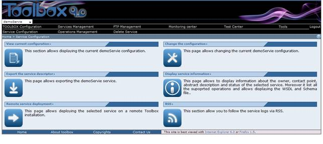

The Service Management page has different section depending if a service is selected or not.
If no service is selected only all the functionality common to all the services are available

If a service is selected additional functionality applicable to the service are available
